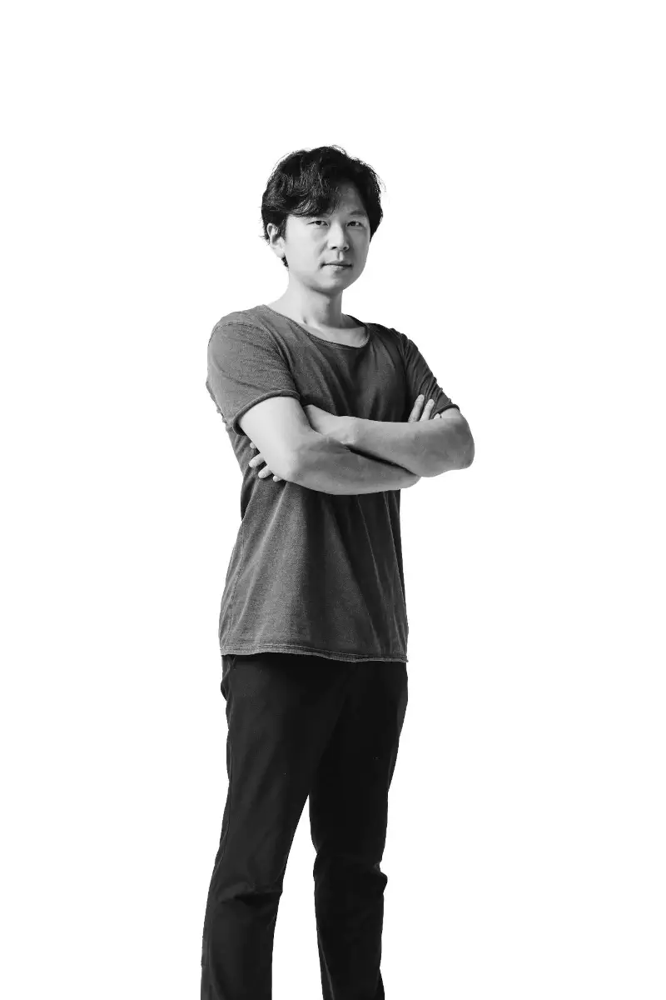

Jin Lee

Title: Syn-thesis: Autonomy Flag
Jin Lee’s project explores the absolute dependence of our lives on energy. Not only does energy enable the development, growth, and flourishing of our societies, but it is also the primary commodity that —“allows minorities to access social intelligence and make their voices heard,”— thus framing access to energy as a matter of social justice rather than merely a privileged resource for certain social groups.
From this perspective, the current development of large-scale, concentrated energy power grids, as well as the accessibility of certain high-performance energy production processes, should be considered a common good rather than something controlled by a small group of companies.
In this project, the artist investigates the frictions at the micro-levels of energy generation models to collectively create an “anti-monument” of today’s system. Alongside the other selected proposals, we believe that Gyujin Lee’s work will foster meaningful exchanges that can be shared with all our communities.
Premiere info: Date to be announced